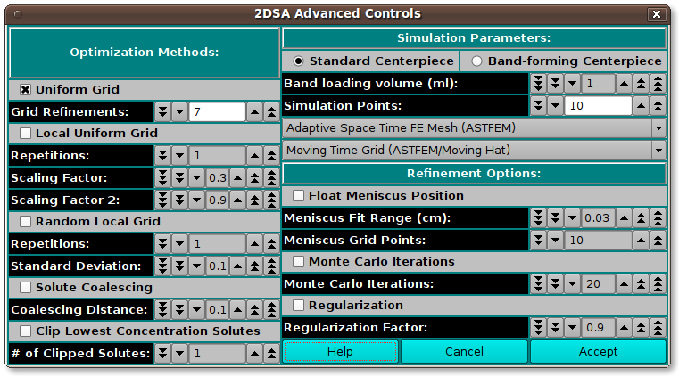

UltraScan 2DSA Advanced Analysis Control
This dialog provides for definition of an analysis run with parameters
not normally of interest to the typical user.
The advanced analysis choices presented in this dialog fall into
three categories.
-
Optimization Methods: Parameters in this section allow for
methods beyond the default Uniform Grid method.
-
Simulation Parameters: Parameters here allow for changes
in the base Lamm equation simulation computation method.
-
Refinement Options: These parameters duplicate some found
in the standard analysis control dialog; and add the Regularization
options.
2DSA Advanced Controls window:

Functions in this dialog are explained elsewhere. Below are repeated
just those related to Simulation Parameters and those in the general-use
button box.
Functions:
-
Standard Centerpiece Check to specify a standard,
non-band-forming centerpiece.
-
Band-forming Centerpiece Check to specify a band-forming
centerpiece.
-
Band-loading volume (ml): Specify any band-loading volume
in milliliters.
-
Band-loading Volume: Specify a band-loading volume value.
-
Simulation Points: Specify simulation points.
-
(mesh type) Select from one of several mesh types,
including Adaptive Space Time (ASTFEM), Claverie, Moving Hat,
user File, or Adaptive Space Volume (ASVFEM).
-
(grid type): Select the grid type to use in the
simulation: MOVING, FIXED.
-
Help Display this documentation.
-
Cancel Exit this dialog without returning parameter values
to the main analysis control dialog.
-
Accept Exit this dialog and return parameter values
to the main analysis control dialog.
 Manual
Manual